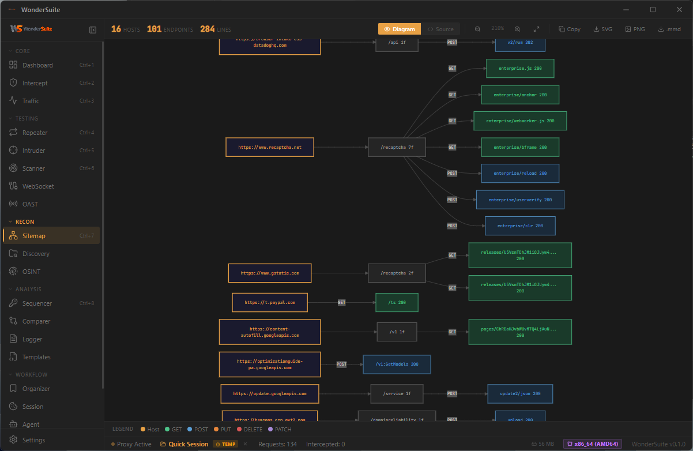

Visual Recon
Every endpoint mapped in real time
Map the
attack surface.
16 hosts. 101 endpoints. 284 edges. Click any node to jump to its traffic, history, or scanner result.
WonderSuite — Sitemap · Diagram
